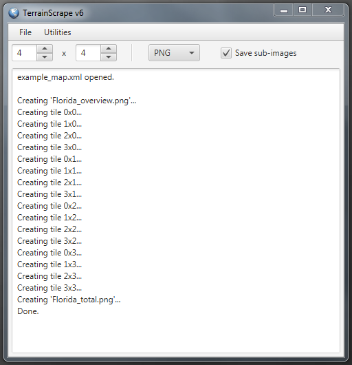
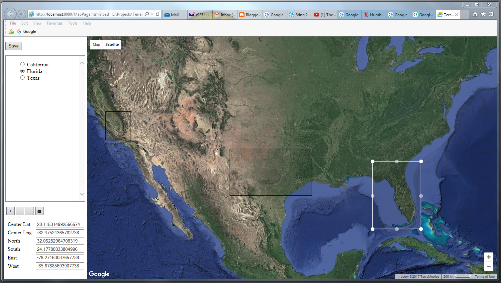

Overview
The highest resolution image that can be requested through the Google Static Maps API is 640 x 640 pixels, covering whatever area was requested.
When mapped over terrain, this resolution is very grainy when zoomed in. To create a higher resolution image, TerrainScrape takes the overall
area and divides it to create an X by Y grid of tiles. The tiles are downloaded separately at 640 x 640 resolution and then stitched together
to create a larger image.
Google allows a request to specify a rectangle, defined by northeast and southwest points, and finds the highest zoom level at which the entire rectangle is
visible. Because Google Maps has discrete zoom levels, the image will also include a border of excess terrain surrounding the rectangle of interest. To remove
this excess, TerrainScrape places special marker images (which must be hosted on the net where Google can find them) at the northeast and southwest
points and then finds them in the image and uses them to trim the border.
The uncertain quantity of border makes it difficult to predict the file size and resolution of the resulting image. Avoid combinations of area bounds
and horizontal/vertical grid sizes that result in long thin tiles (in either axis), which will push Google toward using low zoom levels, giving low
resolution. Aim for grids that produce roughly square tiles. Trial and error are necessary to get the right mix of resolution and image file size.
Application Window
On launching TerrainScrape, you will see the Application Window. It runs a local webserver that will interact with Map Pages,
which will be opened inside the system default web browser.

Menus
- File
- Default Map: opens a new browser Map Page showing the default global view.
- Open Map File: opens a new browser Map Page, loading details from a map file to restore the position, zoom level, and map areas.
- Recent Files: a shortcut list to open the most recent map files.
- Exit: exits the program. Browser windows opened by the application are not closed.
- Utilities
- Set Port: opens a prompt to set the port used to communicate between the application and its Map Pages, in case of conflict or limited access. Changes
takes effect only after restarting the application.
- Create Marker Images: creates fresh copies of the marker image files ‘markSW.png’ and ‘markNE.png’ in the application’s root directory.
- Set Marker URL: changes the URL where TerrainScrape will look for the marker image files.
- Help: opens this help page in the system default browser.
Parameters Toolbar
- X and Y Tile Counts: these fields specify the number of horizontal and vertical tile images to be requested from Google Maps and stitched together to form the
composite image.
- Graphics format: specifies the format in which to save image files.
- Save sub-images: if checked, the individual tile images will be saved alongside the completed composite.
Output
- The output text area records loading, saving, and progress in capturing images.
Map Page
Map Pages are opened in a browser, either by using Default Map or Open Map File in the Application Window's File menu, or by entering
'http://localhost:8080/MapPage.html' in a browser navigation bar (substitute the new port number in place of 8080, if it has been altered).
You can have many Map Pages open at the same time, each communicating with the application. Pages can be left open independent of the
application, although they can't capture images or save/load maps without it. If the application is restarted, windows left open can be used again.
If the browser URL ends with the querystring '?load=<filename>', where filename is a path to an XML map file, the page will load that
map file. This is normally added automatically to the URL by using Open Map File in the application.

Map
- The map can be dragged with the mouse to pan around, and zoomed in or out using the mouse scroll wheel or +/- zoom control in the lower right corner.
- The map shows unlabeled satellite imagery by default. This can be altered with the Map and Satellite buttons in the upper left corner. Each map type has a
dropdown that appears when hovered over while that type is selected.
- The Satellite dropdown is a 'Labels' checkbox which shows or hides labels such as political boundaries, city names, and roads.
- The Map dropdown is a 'Terrain' checkbox which shows or hides topological and terrain textures.
- When a map area image is captured, it will be unlabeled satellite imagery, regardless of the current map type settings. The labels and map mode can be helpful
when trying to find a desired location on the map.
- A distance scale bar is shown in the lower left status bar. Clicking it toggles between miles/feet and kilometer/meter modes.
Map Area Controls
- Save: saves the map bounds, zoom level, map areas, and current settings of the parameters toolbar. The Save As dialog tends to open under the browser window,
so click over to the Application Window to access it. Save files are created in the 'maps/' directory.
- Area List: as map areas are added to the map, their names appear here, along with radio buttons that show which area is selected. The selection can be changed
either by clicking a radio button or clicking the area on the map. When an area is selected, it turns white, and can be dragged to resize or move it..
- Area Buttons
- Add New Area: when clicked, a prompt will ask for a unique name for the area. Once given, the cursor becomes a crosshairs when over the map.
Clicking on the map creates a default-sized area centered on the cursor. Canceling out of the prompt or clicking the Add New Area button again will cancel the action.
- Remove Selected Area: deletes the selected map area.
- Rename Selected Area: opens a prompt to rename the selected map area.
- Lock/Unlock Selected Area: the lock state (indicated by a greyed-out name) of the selected area is toggled. Locked areas cannot be dragged or resized and are
transparent to mouse clicks, allowing areas inside them to be manipulated. Locked areas can still be deleted and renamed. Lock state is saved along with other
area properties.
- Capture Selected Area: sends the name and coordinates of the selected area to the application, which opens a capture dialog showing an overview
of the area (this tends to appear under the browser window, so click over to the application to access it). Choosing OK begins the creation of the
composite image using the current parameters on the parameter toolbar.
- Area Coordinate Fields: the coordinates of the selected map area are displayed in these text fields. They adjust as the area is moved or
resized, but can also be changed manually to alter the map area to precise values.
{kind=link}
{kind=link}